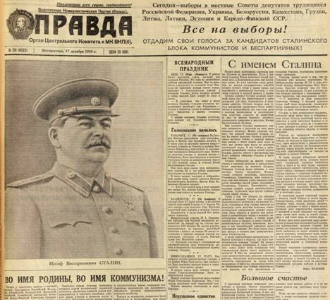
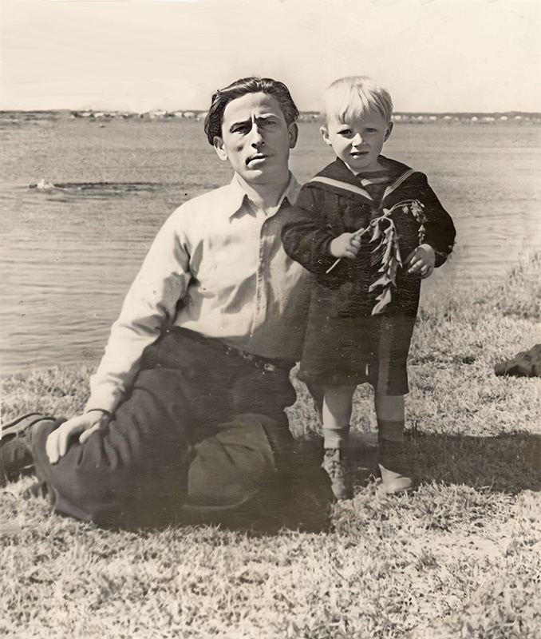
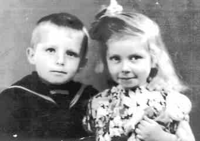
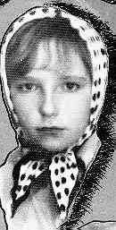
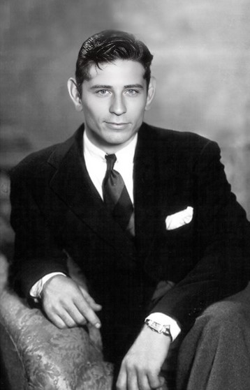
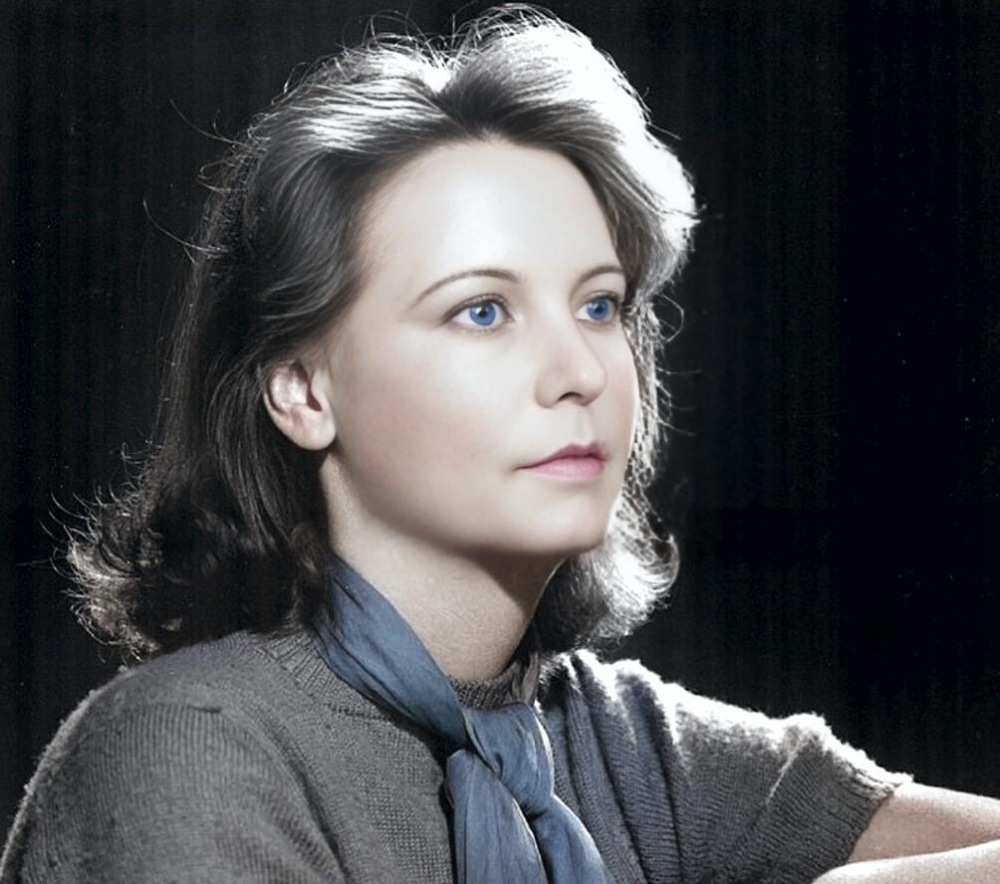
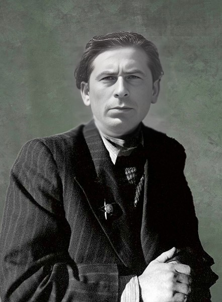

Я родился во всенародный праздник, в день выборов в местные Советы трудящихся 17 декабря 1950 года в посёлке Курлово.

К 1950-ому году генсек отказался от помощи союзников по коалиции и под лозунгом Миру Мир повёл СССР к объединению пролетариев всех стран в новой войне с целью окончательной победы над империализмом.
На всём экономили и жизнь вокруг была скудной.
Это было дном ХХ века России, куда увлекли её события и ошибки текущей истории. Однако все средства массовой информации обещали населению, что будет людям счастье, счастье на века.
В день моего рождения газету вероятно раздали с утра, напечатав заранее и вовремя подвезли в посёлок.



Я был старшим из трёх детей в нашей семье.
На фото - с отцом в 1956 году, сестрой Любой в 1956 году и моя фото младшей сестры Иры в 1967 году.
Фото мамы и папы восстановлены с помощью искусственного интеллекта в 2024 году


